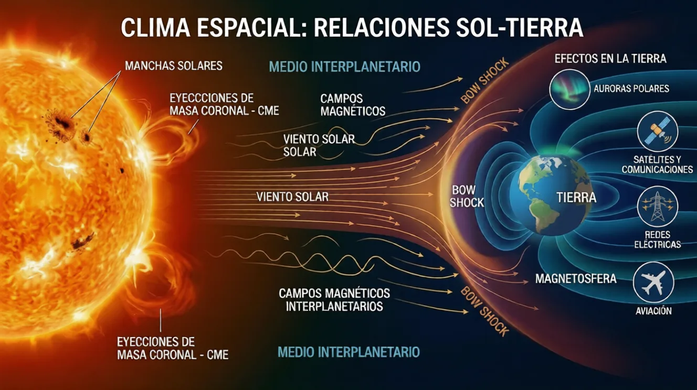
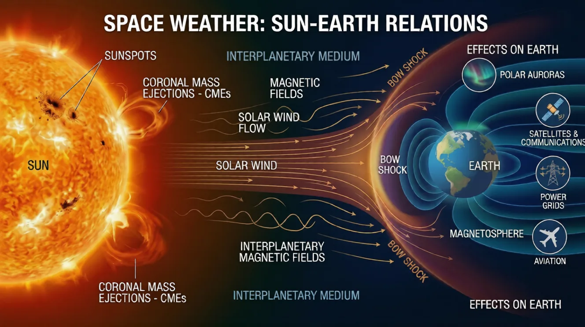

← Líneas de investigación← Research lines
Clima Espacial (Space Weather): Relación Sol-TierraSpace Weather: Sun-Earth Relationship
¿Qué es el clima espacial?What is space weather?
El clima espacial es el conjunto de condiciones variables en el espacio entre el Sol y la Tierra, determinadas por la actividad solar: viento solar, fulguraciones y eyecciones de masa coronal. Puede perturbar el campo magnético terrestre y afectar satélites, comunicaciones, sistemas de navegación y redes eléctricas.Space weather is the set of changing conditions in the space between the Sun and Earth, driven by solar activity: the solar wind, flares and coronal mass ejections. It can disturb Earth's magnetic field and affect satellites, communications, navigation systems and power grids.


El Clima Espacial es la rama aplicada que estudia cómo la actividad solar afecta el entorno tecnológico y biológico de los planetas. Esta línea conecta la física solar pura con la geofísica y la exploración espacial.
Viento Solar y CMEs
Investigamos las Eyecciones de Masa Coronal (CMEs), inmensas nubes de plasma magnetizado que viajan por el medio interplanetario. Estudiamos su propagación y cómo sus campos magnéticos interactúan con la magnetosfera terrestre. El análisis del viento solar y sus propiedades anisotrópicas nos permite entender la turbulencia del plasma que baña nuestro sistema solar.
Impacto Planetario y Terrestre
- Geomagnetismo: Utilizamos datos de observatorios locales (como Fúquene, Colombia) para estudiar las tormentas geomagnéticas inducidas por el Sol.
- Atmósferas Planetarias: Extendemos nuestra investigación a otros mundos, analizando cómo el ciclo solar de 11 años afecta la variabilidad de la atmósfera de Marte, lo cual es crítico para futuras misiones tripuladas.
- Astrobiología: Incluso exploramos los efectos de la radiación UV solar en sistemas biológicos (como cultivos de quinoa), simulando ambientes extremos para entender la habitabilidad planetaria.
Space Weather is the applied branch that studies how solar activity affects the technological and biological environment of planets. This line connects pure solar physics with geophysics and space exploration.
Solar Wind and CMEs
We investigate Coronal Mass Ejections (CMEs), massive clouds of magnetized plasma traveling through the interplanetary medium. We study their propagation and how their magnetic fields interact with the Earth's magnetosphere. Analyzing the solar wind and its anisotropic properties allows us to understand the turbulence of the plasma that bathes our stellar system.
Planetary and Terrestrial Impact
- Geomagnetism: We use data from local observatories (like Fúquene, Colombia) to study geomagnetic storms induced by the Sun.
- Planetary Atmospheres: We extend our research to other worlds, analyzing how the 11-year solar cycle affects the atmospheric variability of Mars, critical for future manned missions.
- Astrobiology: We even explore the effects of solar UV radiation on biological systems (like quinoa crops), simulating extreme environments to understand planetary habitability.
Otras líneas de investigaciónOther research lines
- Óptica en Alta Resolución: Dinámica y Magnetismo FotosféricoHigh-Resolution Optics: Photospheric Dynamics and Magnetism
- Observación en Radio y Rayos X: Altas Energías y la CromosferaRadio and X-Ray Observation: High Energies and the Chromosphere
- Simulaciones y Machine Learning: El Sol en la Era DigitalSimulations and Machine Learning: The Sun in the Digital Era
Ver la producción científica del grupo →See the group's scientific output →